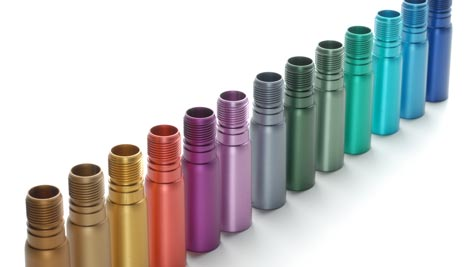

Thông tin chi tiết

Anode nhôm
Anod nhôm là công nghệ oxy hóa sản phẩm bằng cách nhúng tấm nhôm thông thường (cực dương) vào bể anodized gồm các hóa chất acetone, axit sunfuric đậm đặc ( cực âm). Khi có dòng điện chạy qua bể anodized và làm oxy hóa bề mặt của tấm nhôm tạo lớp oxy hóa mỏng nhưng cực bền và có thể xếp độ cứng của anode đứng sau kim cương.
Thông tin sản phẩm
-
anode nhôm là gì?
Anod nhôm là công nghệ oxy hóa sản phẩm bằng cách nhúng tấm nhôm thông thường (cực dương) vào bể anodized gồm các hóa chất acetone, axit sunfuric đậm đặc ( cực âm). Khi có dòng điện chạy qua bể anodized và làm oxy hóa bề mặt của tấm nhôm tạo lớp oxy hóa mỏng nhưng cực bền và có thể xếp độ cứng của anode đứng sau kim cương.

-
Tại sao nên anode nhôm?
Nhôm là một kim loại tương đối sống động và nó có thể tự tạo thành một màng oxit có độ dày từ 0,01 đến 0,10 Lm trong không khí. Lớp màng oxit tự nhiên này là vô định hình, mỏng và xốp, và có độ bền cơ học thấp. Mặc dù nó có khả năng bảo vệ nhất định đối với nhôm, nhưng nó không thể đáp ứng các yêu cầu của mọi người về trang trí, bảo vệ và ứng dụng chức năng của nhôm và hợp kim của nó, do đó quy trình anode nhôm liên tục được ứng dụng và phát triển.
-
Quy trình anode nhôm:
- Xử lý bề mặt: Dùng phương pháp gia công cơ học để làm bề mặt nhẵn và bóng.
- Tẩy sạch dầu mỡ sau khi gia công: Dùng dung dịch kiềm (NaOH) đẻ loại bỏ những bụi bỏ và dầu mỡ còn bám trên bề mặt.
- Rửa sạch: Rửa sạch lại với nước để loại bỏ dung dịch dã dùng còn sót trên bề mặt.
- Tiến hành anode nhôm: Nhúng các bộ phận hoặc các chi tiết của vật liệu nhôm vào bể Anodized chứa hóa chất. Lúc này, vật liệu nhôm đóng vai trò là các anode mang cực dương và bể hoá mang cực âm. Dòng điện được chạy qua bể Anodized để tạo nên các phản ứng hóa học làm oxy hoá bề mặt của nhôm. Tấm nhôm được ngâm trong bể Anodized trong một thời gian nhất định đủ để hình thành nên lớp oxy hóa cứng trên bề mặt nhôm.
- Lấy vật liệu ra khỏi bể rồi rửa sạch lai với nước và sấy khô.
- Kiểm tra sản phẩm sau khi khi anode đã đạt yêu cầu đưa ra chưa.
-
Ứng dụng việc anode nhôm
Ngày nay anode nhôm được ứng dụng rất rộng rãi trong nhiều lĩnh vưc khác nhau: Xây dựng (kết cấu khung nhà thép, cửa đi, cửa sổ, vách kính,..), y tế (các dụng cụ y tế), công nghiệp điện tử ( vỏ, các thiết bị vi tính, điện tử), đồ gia dụng ( nồi, bếp,..), công nghệ chế tạo ô tô, công nghiệp vật liệu vũ trụ,…
 -
Lợi ích khi anode nhôm
Các thiết bị, vật liệu sau khi anode nhôm có độ chống chịu tốt, gia tăng khả năng chống mài mòn, kháng điện, kháng nhiệt tốt hơn. Ngoài ra còn mang lại tính thẩm mĩ cho sản phẩm.